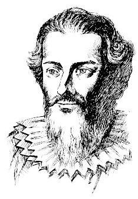

例题 1例 1 设 是实数，判断下列命题的真假，并说明理由: (1)如果 ,且 ,那么 ; (2)如果 ，且 ，那么 ； (3)如果 ，那么 ； (4)如果 ，那么 ，其中 是正整数； (5)如果 ，那么 ； (6)如果 ，那么 . 教材 L33–46答案与解析收起 / 展开解(1)(2)(3)(4)(6)都是真命题；(5)是假命题. (1)(2)可由等式的加法性质、乘法性质及等式的传递性得到. (3)在 的两端同乘 可得到. (4)将(2)中的 换成 换成 ，可得 ，并反复用乘法性质可得. (5)因为当 时,即使 ,仍有 . (6)若 不都相等，不妨设 与 不相等，则条件等式的左边为正数，而右边为零，矛盾，因而等式成立. 我们知道, 含有未知数的等式称为方程 (equation). 使得方程左右两边相等的未知数的值, 称为方程的解 (solution of an equation). 以方程的所有解为元素组成的集合称为方程的解集 (solution set of an equation). 方程的解和未知数的取值范围有关. 同一方程在未知数的不同取值范围内求解, 其解集不一定相同. 例如, 方程 在自然数集中的解集为 ,在有理数集中的解集为 ,而在实数集中的解集为 . 在本章中, 都是在实数集中求解方程. 教材 L47–70
例题 3例 3 设 ,求关于 与 的二元一次方程组 的解集. 教材 L79–80答案与解析收起 / 展开解 两式相减,得 . 当 时,将 代入方程 ,得 . 此时,原方程组的解集为 . 当 时,方程 无解,从而原方程组无解, 其解集为 . 教材 L81–86
练习2.1(1) · 1 设 是实数,判断下列命题的真假,并说明理由: (1)若 ，则 ； (2)若 ，则 ； (3)若 ，则 或 ； (4)若 ,且 ，则 . 教材 L89–98答案与解析收起 / 展开1.(1)假命题；(2)(3)(4)真命题. 教参 L564–565
例题 4例 4 求一元二次方程 的解集. 教材 L109–110答案与解析收起 / 展开解 原方程解的情况由其判别式 的符号决定: 当 时,解集为 , 简记为 . 当 时,解集为 . 当 时,解集为 . 教材 L111–118
例题 5例 5 证明: 是等式 恒成立的充要条件. 教材 L119–126答案与解析收起 / 展开证明 先证充分性. 若 ,则等式 自然恒成立. 再证必要性. 由于等式 Q 等式 恒成立, 即该等式对任意实数 都成立. 恒成立,分别令 ,并代入上式,得 由此,得  韦达 (F. Viète, 1540- 1603),法国数学家. 例 4 告诉我们, 给定了一个一元二次方程的系数, 就可以确定该方程的根和解集. 反过来, 如果已知一个一元二次方程的两个根, 能否确定此方程的系数呢? 描述一元二次方程根与系数关系的韦达定理就回答了这一问题. 韦达定理 若一元二次方程 的两个根为 ,则 证明 因为一元二次方程 的两个根为 、 ,所以二次三项式 可以因式分解为 请用求根公式验证韦达定理. 由于 从而等式 恒成立. 由例 5 知, 该等式两边的对应项系数应相等. 因此 教材 L127–200
练习2.1(2) · 2 已知方程 的两个根为 ,求下列各式的值: (1) ； (2) ； (3) ； (4) . 教材 L219–226答案与解析收起 / 展开 (1) 3 . (2) . (3) 7. (4) -17. 教参 L574–575
例题 7例 7 证明: 如果 ,那么 ; 反之亦然. 教材 L299–300答案与解析收起 / 展开证明 若 ,利用不等式的加法性质,在不等式两边同加 ,即得 . 反过来,若 ,仍利用不等式的加法性质,在不等式两边同加 ,即得 . 例 7 表明, 将不等式中的任一项改变符号后, 可以从不等式的一边移到不等式的另一边. 在研究不等式时, 移项常用于化简一个不等式. 教材 L301–306
例题 9例 9 已知 . 求证: . 教材 L319–320答案与解析收起 / 展开证明 因为 ,所以 . 于是 即 . 不等式加法性质表明:在不等式的两边加上 (或减去) 同一个实数, 不等号的方向不变. 不等式乘法性质表明:在不等式的两边乘 (或除以) 同一个正数，不等号的方向不变. 但若乘 (或除以) 同一个负数, 不等号的方向要改变. 等式与不等式的性质有什么相同点和不同点? 例 8 表明, 由 可推出 . 这称为不等式的同向可加性. 教材 L321–350
例题 10例 10 ( 1 )已知 ，求证: ； 较大的数的倒数是否一定比较小的数的倒数小? ( 2 )已知 . 求证: . 教材 L351–360答案与解析收起 / 展开证明 (1) 因为 ,所以 . 由不等式的乘法性质,在不等式 的两边同时乘 ,得 ,即 . (2)因为 ，利用(1)的结论，有 . 又因为 ,由不等式的乘法性质,有 及 ,从而由不等式的传递性得到 . 教材 L361–368
练习2.1(3) · 1 设 为实数,判断下列命题的真假,并说明理由: (1)如果 ,那么 ; (2)如果 ，那么 ； (3)如果 且 ，那么 ； (4)如果 ,那么 ; (5)如果 ，那么 . 教材 L371–382答案与解析收起 / 展开1.(1)假命题. (2)假命题. (3)真命题. (4)假命题. (5)假命题. 理由略. 教参 L578–579
例题 11例 11 (1)已知 . 求证: ； (2)已知 ，求证: ，其中 是正整数. 教材 L385–388答案与解析收起 / 展开证明 (1) 因为 ,所以 . 又因为 , ,所以 . 由不等式的传递性,得 . (2)将(1)结论中的 换成 换成 ，就得到 . 结合 ,再次利用(1)的结论，可得 ,反复运用 (1)的结论，最终就得到 . 教材 L389–392
例题 12例 12 已知 为正数， 为正整数. 求证:如果 ,那么 . 教材 L393–394答案与解析收起 / 展开证明 利用反证法. 首先根据实数的性质可知,在 , 及 三者中有且仅有一个成立. 假定结论 不成立, 那么或者 ,或者 . 如果 ,由于 都是正数,利用例 11 (2) 的结论,那么两边 次乘方，可得 ，与假设 矛盾； 如果 ,两边 次乘方得 ,同样与假设 矛盾. 综上所述， 不可能成立，因此 . 为比较两个实数的大小，常用的方法是判定这两个数的差的符号. 要比较两个表达式 及 的大小，同样可以采用类似的方法. 例如,要证明 ,只需证明 ; 同样地,要证明 ,只需证明 . 定理 对任意的实数 和 ,总有 且等号当且仅当 时成立. 证明 因为 所以 而且当且仅当 即 时,不等式中等号成立. 教材 L395–426
练习2.1(4) · 1 设 是实数,判断下列命题的真假,并说明理由. (1)如果 ，那么 ； (2)如果 ，那么 ； (3)如果 ，那么 . 教材 L439–446答案与解析收起 / 展开 (1)真命题. (2)假命题. (3) 真命题. 理由略. 教参 L584–585
习题2.1A · 6 已知一元二次方程 的两个实根分别为 ,求作二次项系数是 1 , 且分别以下列数值为根的一元二次方程: (1) ； (2) ； (3) ； (4) . 教材 L467–472答案与解析收起 / 展开 (1) . (2) . (3) . (4) . 教参 L602–603
习题2.1A · 7 设 为实数,判断下列命题的真假: (1)若 ，则 ； (2)若 ，则 ； (3)若 ，则 ； (4)若 ，则 ； (5)若 ，则 ； (6)若 ，则 . 教材 L473–486答案与解析收起 / 展开 (1)真命题. (2)真命题. (3)假命题. (4) 真命题. (5) 真命题. (6) 假命题. 教参 L604–605
习题2.1A · 8 选择题: (1)如果 ，那么下列不等式中成立的是 ( ) A. ； B. ； C. ; D. . (2)如果 ，那么下列不等式中成立的是 ( ) A. ; B. ; C. ; D. . (3)如果 ，那么下列不等式中成立的是 ( ) A. ; B. ； C. ; D. . 教材 L487–502答案与解析收起 / 展开 (1) C. (2) B. (3) C. 教参 L606–607
习题2.1B · 2 设 为实数，求关于 的方程 的解集. 教材 L523–524答案与解析收起 / 展开 当 时,解集为 ; 当 且 时,解集为 ；当 时,解集为 ；当 时, 解集为 . 教参 L626–627
习题2.1B · 5 已知一元二次方程 的两个实根分别为 ,求作二次项系数是 1 , 且分别以下列数值为根的一元二次方程: (1) ; (2) ； (3) ； (4) . 教材 L529–534答案与解析收起 / 展开 (1) . (2) . (3) . (4) . 教参 L632–635
习题2.1B · 9 原有酒精溶液 (单位: ),其中含有酒精 (单位: ),其酒精浓度为 . 为增加酒精浓度,在原溶液中加入酒精 (单位: ),新溶液的浓度变为 . 根据这一事实, 可提炼出如下关于不等式的命题: 若 ,则 . 试加以证明. 教材 L541–542答案与解析收起 / 展开 证明略. 教参 L648–649